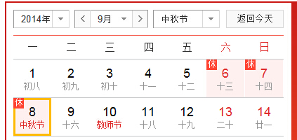

Conversation with 81184027 at Sun 17 Aug 2014 09:46:42 AM CST on 154115835 (webqq)
(09:48:49 AM) 光: (08/17/2014 12:39:15 AM) 田慧慧-金华: (#199516)楼下社区居委会的阅览室里居然有本金瓶梅，宝宝跑进去乱翻出来了，简体。奇怪，那不是禁书来着，和红楼梦摆一起的。看来也是经典//唐诗 宋词 元曲 明小说 最初四大小说确实有金瓶梅 这个是暗讽当时朝廷的 到了清换为红楼梦了
(09:49:36 AM) 光: 刚才发信息卡死了，linux下：）
(09:50:51 AM) 光: (08/17/2014 12:42:49 AM) 紫罗兰: (#199519)你都睡很晚额 //带孩子（3岁左右）的都这样，孩子睡了才能睡，很辛苦
(09:54:07 AM) 光: 个人以为如果说清也是小说为代表有点说不过去，清小说不是很多啊
(09:54:53 AM) 光: 不过现在的说法，大致上是 唐诗 宋词 元曲 明清小说
(09:55:24 AM) 光: 所谓四大名著其实只是四大小说
(10:08:15 AM) 光: 刚才为了防止说错误导，特别上网查了一下，找到这样一篇 http://news.xinhuanet.com/newmedia/2006-01/04/content_4005601.htm
(10:09:47 AM) 光: 鲁迅当年能读到的作品不如今天知道的多，如“公案小说”就不在他的视野中；再者有的分类似乎粗略了些，如将《水浒 传》放在“讲史”中，将才子佳人小说放在“人情”中，就未必合适。不过应当承认，鲁迅当年的分类大体上还是反映了明代小说的实况的。他说清代小说的流派 “比明朝比较的多”(《中国小说的历史的变迁》)，除文言小说“拟古派”之外，他说还有“讽刺小说”、“人情小说”、“才学小说”、“狭邪小说”、“侠义 及公案小说”、“谴责小说”等，这些还不包括晚清的翻译小说、天主教基督教小说和其他受西方小说影响而新生的流派，可以说清代是小说流派纷呈的时代，其繁 荣景象超过以往任何一个朝代。 清代小说是古代小说的高峰期，这一判断应当不会有多大争议，《聊斋志异》、《儒林外史》、《红楼梦》都产生在这个时期，它们的思想 艺术成就都达到了古代小说的巅峰。这三部作品距离今天都有二三百年了，其间中国社会的政治经济制度及其观念意识都经历了最剧烈和最深刻的变革，但它们的艺 术魅力并未因时代变迁而稍有减褪，可以说它们的经典桂冠是历史赋予的，作为中国小说高峰的标志，当之无愧。
(10:14:26 AM) 光: 那么如果是这样，为何四大小说中 明3 清1呢？
(10:15:02 AM) 光: 难道若干清小说中能代表清的只有红楼梦这样一部么？
(10:28:26 AM) 蛋包飯:
(10:27:49 AM) 光: 《三国演义》、《水浒传》、《西游记》、《红楼梦》并称为“四大名著”由来已久，仿佛这四部书甫一出世便是“名著”的命，其实非也。小说在我国，自古被视为雕虫小技，难登大雅之堂，故名之曰“小”，以致古时操刀小说的文人墨客，多化名以为，怕被世人耻笑。待到二十世纪初，西学东渐，国人才逐渐改变这个观念，把小说奉为文学界的上宾，众文人趋之若骛，于今时愈演愈烈。
因此，现如今“国宝”级的“四大名著”，想当初也有过“下九流”的时候。不过“四大名著”的说法究竟由何人在何时提出已不可考。但据李渔记载，最早将四部小说放在一起并称的是明末的冯梦龙，他将《三国演义》、《水浒传》、《西游记》和《金瓶梅》并称为“四大奇书”。由此可知，冯梦龙的“四大奇书”便是现在这个“四大名著”的前世。因此我说，“四大名著”的叫法，四分之三的功劳应归功于冯梦龙。只可惜冯先生早出生了200年，否则，这个功劳百分之百非他莫属。
有了冯梦龙的“四大奇书”，也就等于有了后来的“四大名著”，因为世情小说一路，《红楼梦》与《金瓶梅》相比，的确“青出于蓝而胜于蓝”，取彼而代之顺理成章。可问题在于，《金瓶梅》虽然不及《红楼梦》，但较其他三大名著却有过之无不及。原因很简单，《金瓶梅》是我国历史上第一部文人独立创作的长篇小说，仅此一点，便远超前三大名著。前三部名著《三国演义》、《水浒传》和《西游记》或多或少都属于累积型作品，是作家在收集正史、野史、民间传说等基础上改编而成，基本上可算是集体创作的产物。而衡量一部文学作品的好与坏，是否原创至关重要。因此，现今这个广为流传的“四大名著”说十分值得商榷。
中国文学的发展，到明清时期迎来了小说创作的高峰，这一点众所周知。冯梦龙将《三国演义》、《水浒传》、《西游记》和《金瓶梅》并称为“四大奇书”，这本身无可争议，因为他选中的这四部书确能代表明代小说的最高成就。但是，去掉《金瓶梅》，加上《红楼梦》的所谓“四大名著”却无法代表明清两代小说的最高成就。综观明清两代小说，最具代表性的作品应数以下八部：明代是《三国演义》、《水浒传》、《西游记》和《金瓶梅》；清代是《聊斋志异》、《儒林外史》、《红楼梦》和《镜花缘》。两相对比，清代小说的总体成就要略高于明代小说。在中国古典“四大名著”里入选三部明代小说，却只选一部清代小说，实在说不过去，何况又将明代最好的一部小说《金瓶梅》排除在外。
“四大名著”里漏选了《金瓶梅》已很过分，没有《儒林外史》则更不应该，这部讽刺文学的经典之作，把由《西游记》开创的那种独特的幽默与讽刺的笔法文风，发挥得淋漓尽致，与《红楼梦》一道将中国古典文学推向了顶峰，并直接影响了后来的“四大谴责小说”，开创了晚清小说的新格局。所以，评选中国古典小说的“四大名著”，上述三部缺一不可。
最后一部，在《三国演义》、《水浒传》、《西游记》和《聊斋志异》里面，我选《聊斋志异》，虽然这四部书整体水准难较高低，但是，既然选择的是中国古典小说的“四大名著”，如果只选择长篇小说和白话小说，难免有失偏颇。《聊斋志异》作为中国古代文言短篇小说集中最好的一部，入选“四大名著”理所应当。因此，真正能代表中国古典小说最高成就的“四大名著”应该是《金瓶梅》、《聊斋志异》、《儒林外史》和《红楼梦》。
(10:27:57 AM) 光: 找到这样一个说法
(10:28:07 AM) 光: http://ask.class01.com/197431.htm
(10:28:53 AM) 光: 如果这样反而好理解了
(10:31:12 AM) 光: 四大小说 从最初的 三国演义 水浒传 西游记 金瓶梅 （明末冯梦龙提出的四大奇书——小说）到了清朝只是因为金瓶梅中的描写太露骨了，将红楼梦填了进去，实在只是为了凑一个四大的数字
(10:31:32 AM) 光: 到了今天也就变成了四大名著了
(10:32:01 AM) lost message from #199551 to #199553
(10:35:05 AM) 憧憬￠未来: 四大名著是什么时候定下来的？
(10:35:13 AM) 憧憬￠未来: 清朝么
(10:32:19 AM) 光: 那时候应该还不是
(10:32:26 AM) 光: 小说谈不上名著
(10:32:33 AM) 光: 估计是民国 鲁迅之后吧
(10:33:15 AM) 光: 小说只是大众文学，在四书五经的时代
(10:33:22 AM) 光: 是不会上升到名著这个档次的
(10:36:29 AM) 憧憬￠未来: 那又最先是谁定的？
(10:33:45 AM) 光: 明末 冯梦龙 订的四大奇术
(10:33:52 AM) 光: 奇书
(10:34:03 AM) 光: 可以视为四大名著的雏形
(10:34:13 AM) 光: 三国演义 水浒传 西游记 金瓶梅
(10:37:20 AM) 憧憬￠未来: 哦哦
(10:34:17 AM) 光: 嗯
(10:34:24 AM) 光: 那时候还没有红楼梦呢
(10:37:41 AM) 憧憬￠未来: 其实，我四大名著都没看过:L
(10:34:40 AM) 光: 嗯
(10:34:49 AM) 光: 能把小说提高到名著这个档次
(10:37:55 AM) 憧憬￠未来: 小时候爱玩，坐不住
(10:34:58 AM) 光: 应该是鲁迅的杰作
(10:35:21 AM) 光: 鲁迅就是非常喜欢写小说的
(10:38:40 AM) 憧憬￠未来: 名著不名著吧
(10:38:46 AM) 憧憬￠未来: 个人喜好不同
(10:35:44 AM) 光: 嗯
(10:36:17 AM) 光: 现在的小说中估计就没有能被推到这个档次的名著了
(10:37:07 AM) 光: 即使是获得诺贝尔文学奖的莫言
(10:37:15 AM) 光: 他的小说也不会被成为名著
(10:37:18 AM) 光: 称
(10:37:34 AM) 光: 至少我目前还没听到有人说莫言的小说是名著的
(10:40:54 AM) 憧憬￠未来: 无所谓
(10:37:52 AM) 光: 嗯
(10:41:02 AM) 憧憬￠未来: 估计作者
(10:41:06 AM) 憧憬￠未来: 也不在乎
(10:38:05 AM) 光: 嗯
(10:38:40 AM) 光: 《三国演义》、《水浒传》、《西游记》、《红楼梦》并称为“四大名著” 由来已久，仿佛这四部书甫一出世便是“名著”的命，其实非也。小说在我国，自古被视为雕虫小技，难登大雅之堂，故名之曰“小”，以致古时操刀小说的文人墨 客，多化名以为，怕被世人耻笑。待到二十世纪初，西学东渐，国人才逐渐改变这个观念，把小说奉为文学界的上宾，众文人趋之若骛，于今时愈演愈烈。
(10:39:50 AM) 光: 既然“名著”了，”经典“也就跟着上了
(10:40:09 AM) 光: 实际上经典这两个词有被滥用只嫌疑
(10:40:11 AM) 光: 之
(10:41:28 AM) 光: 经 最早应该是 四书五经 典 应该指的是三坟五典
(10:41:50 AM) 光: 和小说什么的关系不大
(10:43:54 AM) 光: 三墳五典一詞最早見於《左傳·昭公十二年》，楚靈王稱讚左史倚相：“是良史也，子善視之，是能讀《三墳》、《五典》、《八索》、《九丘》。”杜預有注：“皆古書名。”《尚書序》稱：“伏羲、神農、黃帝之書，謂之《三墳》，言大道也。少昊、顓頊、高辛（嚳）、唐（堯）、虞（舜）之書，謂之《五典》”郑玄说，“三坟五典”就是“三皇五帝之书”。因此三墳即三皇之書，五典謂五帝之書。至於《八索》與《九丘》是指「八卦」與「九州之志」，一說是《河圖》、《洛書》。
(10:45:06 AM) 光: 四书五经是四书和五经的合称，是中国儒家的经典书籍。
四書又稱為四子書，是指《论语》、《孟子》、《大学》、《中庸》。
五经是《詩經》、《尚書》、《礼记》、《周易》和《春秋》。
(10:54:36 AM) 光: 至于佛教和其他宗教的典集，并非当时时代的主流，古中国的主流一直都是儒家文化
(10:55:11 AM) 光: 所以也只是借用儒家名词而已
(10:55:42 AM) 光: 而在借用之前，经和典都是有特指的
(11:06:35 AM) 憧憬￠未来: 经是五经？典呢？
(11:04:22 AM) 光: 五典
(11:04:33 AM) 光: “三坟五典”就是“三皇五帝之书”。
(11:04:44 AM) 光: 少昊、顓頊、高辛（嚳）、唐（堯）、虞（舜）之書，謂之《五典》”郑玄说，“三坟五典”就是“三皇五帝之书”。因此三墳即三皇之書，五典謂五帝之書。
(11:04:55 AM) 光: 这些我都没看过。。。。。。
(11:05:10 AM) 光: 找找
(11:05:13 AM) 光: 看看有没有
(11:09:40 AM) 憧憬￠未来: 哦哦
(11:07:00 AM) 光: 2.传说中的上古五部典籍。《左传·昭公十二年》：“﹝ 倚相 ﹞能读《三坟》、《五典》、《八索》、《九丘》。” 杜预 注：“皆古书名。”《书序》：“ 少吴 、 顓頊 、 高辛 、 唐 、 虞 之书，谓之五典。” 南朝 梁 刘勰 《文心雕龙·宗经》：“皇世《三坟》，帝代《五典》。”
(11:07:04 AM) 光: 看不到了
(11:07:08 AM) 光: 传说中的书
(11:10:32 AM) 心理师仲老师: 结婚时，做选择的标准不是情欲与激情，更非爱与恋，而常常是安全感，不仅长辈为儿女做选择时如此，年轻人自己走选择时也常是如此。结果是，婚姻相对稳定，但缺乏情感。夫妻关系是家庭的定海神针，而这一个基石，普遍没打好
(11:09:13 AM) 光: 坟“坟” 的繁体字由土和贲构成，简体字由土和文构成。根据《辞海》，它有多种含义：墓，土之高者，水涯，大，顺貌，土松而起貌，书籍的一种。因此，《尚书序》将 《三坟》的坟字解释为大，颇为勉强。在笔者看来，《三坟》里的“坟”字，其实是指当时的图书载体和文字载体是用土制成的，它可能是一种类似两河流域的泥 版，也可能是陶版（包括陶制器皿）。从广义的角度来说，土也包括石头，因此《三坟》之书，也可能采用石板载体。事实上，人类很早就在泥土上和石头上作画写 字了，例如，直接在泥地上刻画（中国文字的发明，就曾受到鸟兽足迹的启发），在洞穴里和岩石上作画，在卵石上写字（这种有字的石头，被称为会说话的石 头），而古希腊人所说的象形文字的本意是指埃及人刻在石头上的圣字，摩西在西奈山从上帝那里获得的《十戒》，也是刻写在石板上的。从这个角度来说，中国汉字的坟，也可以解释为有文字的泥版或石板。
(11:09:25 AM) 光: 从这个角度来说，中国汉字的坟，也可以解释为有文字的泥版或石板。
(11:09:41 AM) 光: 典“典” 字的含义有：常规，法典，典章，主其事也，质物（典当），姓（太昊娶少典氏），典籍（原特指五帝之书，我们今天知道其内容的只有尧典和舜典）。那么，这种 被称为“典”的书，到底是一种什么模样呢？这就要从典字的象形来追溯了。在汉字里，典、共、供、具、兵、其、六等字，以及冀、黄、翼和异的原形正体字，都 有一种共同的符号，即一横下面加两个支撑状的点，这种符号的象形含义乃是一个陈列架或陈列物品的有腿的桌几；当然，这不是普通的桌几，而是用于陈列重要物 品的器具，通常都用于重大仪式或宗教巫术仪式上。 因此，“典”的原义是指一种陈列或安置在桌几上的具有重要意义的文书，它的作用相当于公告牌、公约板、神谕碑、法规 文书和行为规范告示。它可能是从契约演化来的，即把小巧的便于收藏的契约大型化、公开化、庄严化，其材质可以是木板、竹板、石板或金属材料，也可能是皮 革、丝帛（附着在硬质材料上）。典这种文书的发明者，应当就是少典氏部落。典的进一步演化就是册，史载殷先人“有典有册”，册就是后来的竹简或木简，它们 是由典的不断小型化、轻便化、折叠化、卷曲化而形成的。此外，典可能也是鼎（铸有重要文字）的前身或雏形。
(11:09:55 AM) 光: 典可能也是鼎（铸有重要文字）的前身或雏形。
(11:10:16 AM) 光: 索“索” 字的含义有：大绳，绞，法，独，尽，搜求，牵引，愿欲，须要，涕流貌。但是，索作为一种文书或信息载体，应当是指结绳纪事符号体系，或许还包括以丝帛或其 它编织物为载体的文书（在丝帛上写字绘画，或者编织出能够传递信息的图案符号）。事实上，中国人最先发明了养蚕和丝帛，因此也就有条件用丝帛作为信息载 体；类似的例子是，由于中国制造出了又细又长又轻又结实的绳子，以及又轻又薄又结实的丝绸和纸，因此中国人才能 率先发明风筝。从这个角度来说，八卦原名八索，也就顺理成章了。所谓《八索》就是丝帛文书，它源于结绳纪事和结绳占卜（卦的字形含义原指测时，结绳符号的 功能之一也是计时）；这就是《尚书序》称“古者伏牺氏之王天下也，始画八卦，造书契，以代结绳之政，由是文籍生焉”的由来。
(11:10:36 AM) 光: 。所谓《八索》就是丝帛文书，
(11:10:56 AM) 光: 丘“丘”字的含义有：阜，山，土之高者（或曰，四方高，中央低为丘），墟，大冢，墓，空，大，聚，区域（四邑为丘）。从字形来说，丘指有平缓坡度的地形地貌。问题是，兵字为什么也要用丘字符呢？其实，兵字实际上是斤和陈列桌几的合形，即把“斤”这种兵器（斤就是斧，具有斜面形状）陈列在桌几上，相传这是由蚩尤最先发明的，所谓“蚩尤作兵”即蚩尤部落最先把兵器作为神器来供奉。 那么，《九丘》这部书，为什么偏偏要选择用丘字来形容或指称呢？《尚书序》取其“聚”的含义，应当说是有一定道理 的，但是并不完全。这是因为，丘还有山川的意思、区域的意思、庞大的意思、空墟的意思和大冢（通常都有丰富的随葬品）的意思。有趣的是，上述含义综合起 来，很像是一种模拟的实物地图，即在不同模拟区域上有着象征该地理方位的物产，用今天的话来说，就是在社稷坛的五色土上陈列着相应方位的物产。更深一层地说，“丘”字在《九丘》中的使用，还表示中央的统治权力（斤）遍布天下东西南北中的所有区域。
(11:11:23 AM) 光: 上述含义综合起 来，很像是一种模拟的实物地图\\
(11:11:34 AM) 光: 因此《九丘》是一部实物地图地理书，它平铺在一处圣洁的地面上（不需要桌几或支架），有点象今天的模型沙盘，也可能是一幅巨画，画有五区九州的山川地貌和物产，以及那里的人文景观。或许是心有灵犀一点通吧，1999年9月9日，笔者和夫人孙晓琴历 时多年，终于创作完成42平方米的巨画《帝禹山河图》，将《五藏山经》所记载的东、西、南、北、中五个区域的447座山，以及河流258处、地望348 处、矿物673处、植物525处、动物473处（其中许多神奇的动物都是由人装扮的）、人文活动场景95处等等内容全部绘出。为此，笔者曾欣然作诗曰： “功成洪水退，帝禹定九州，踏勘海内外，千古一图收。”大禹若有灵，当惊图复出矣！\
(11:11:57 AM) 光: 明白了
(11:12:46 AM) lost message from #199621 to #199623
(11:15:50 AM) 紫罗兰: 看不懂
(11:13:34 AM) 光: :face14:
(11:16:59 AM) 紫罗兰: 不看
(11:13:56 AM) 光: 坟是石板字
(11:14:07 AM) 光: 典是金属上的刻字
(11:14:13 AM) 光: 古青铜器之类的
(11:17:36 AM) 紫罗兰: 都感觉你是考古的了
(11:14:35 AM) 光: 索是丝帛上的字
(11:14:53 AM) 光: 丘是实物地图类似沙盘
(11:14:56 AM) 光: 嗯
(11:15:00 AM) 光: 这些是常识啊
(11:15:06 AM) 光: 应该知道
(11:18:42 AM) 紫罗兰: 我没有常识
(11:15:51 AM) 光: 国人最缺少的就是常识
(11:16:05 AM) 光: 其实很多问题都是常识不够造成的
(11:19:16 AM) 紫罗兰: 哦
(11:16:14 AM) 光: 嗯
(11:16:57 AM) 光: 常识比考证轻松多了
(11:17:05 AM) 光: 只要在别人的基础上看看就好了
(11:20:11 AM) 紫罗兰: 你对你的现状满意么
(11:20:18 AM) 紫罗兰: 嗯
(11:17:16 AM) 光: 嗯
(11:17:43 AM) 光: 你看看就可以了解到别人一辈子的心血呢
(11:20:51 AM) 紫罗兰: 看来有常识是幸福的
(11:17:50 AM) 光: 是啊
(11:18:46 AM) 光: 大多数人的时间都浪费在扯皮上了
(11:18:52 AM) 光: 没时间读书，所以常识不够
(11:21:59 AM) 蛋包飯: 考证考证考证:L
(11:21:59 AM) 紫罗兰: 我就是
(11:19:00 AM) 光: 遇到问题就麻烦了
(11:22:09 AM) 紫罗兰: 嗯
(11:19:08 AM) 光: 嗯
(11:22:18 AM) 蛋包飯: 我考了很多证
(11:19:18 AM) 光: ：）
(11:22:33 AM) 紫罗兰: @光 你有梦想吗？
(11:19:36 AM) 光: 这个常识都是平时一点一点的积累的
(11:19:51 AM) 光: 我知道的多只是我积累的久
(11:22:56 AM) 紫罗兰: 知道
(11:19:55 AM) 光: 嗯
(11:20:16 AM) 光: 人应该有点理想
(11:23:23 AM) 紫罗兰: 你还有追求么？
(11:23:32 AM) 紫罗兰: 嗯
(11:20:29 AM) 光: 有
(11:20:35 AM) 光: 做一个独立的人
(11:20:41 AM) 光: 我的追求
(11:20:56 AM) 光: 如果更多一些
(11:21:04 AM) 光: 有一些自己的总结
(11:24:08 AM) 紫罗兰: 可以理解为装在套子里的人么
(11:21:07 AM) 光: 就更好了
(11:21:18 AM) 光: 独立的人
(11:24:31 AM) 紫罗兰: 怎么个独立法？
(11:21:30 AM) 光: 应该是可以撤掉一切伪装的大人
(11:24:53 AM) 紫罗兰: 呆子
(11:24:58 AM) 紫罗兰: :p
(11:22:01 AM) 光: 思想不同依附在任何东西上
(11:22:03 AM) 光: 独立而存在
(11:22:19 AM) 光: 有标识性
(11:22:28 AM) 光: 就好比 以前的先贤
(11:25:54 AM) 紫罗兰: 哦
(11:23:00 AM) 光: 近代这样的人也不少呢
(11:26:31 AM) 紫罗兰: 没有接触
(11:26:35 AM) 紫罗兰: 过
(11:23:35 AM) 光: 少
(11:26:44 AM) 紫罗兰: 嗯
(11:23:42 AM) 光: 你可能遇不到
(11:23:54 AM) 光: 季羡林就算
(11:27:01 AM) 紫罗兰: 你就是一个了
(11:24:05 AM) 光: 学者一般都算精神独立的人
(11:24:18 AM) 光: 精神不独立的人，作品没法看
(11:24:24 AM) 光: 王小波也算
(11:27:31 AM) 紫罗兰: 可惜我都是看他的书，没有机会和他聊过
(11:27:41 AM) 紫罗兰: 嗯
(11:24:39 AM) 光: 嗯
(11:25:30 AM) 光: 莫言或许也可以算吧
(11:25:37 AM) 光: 没读过他的书
(11:29:19 AM) 紫罗兰: 嗯
(11:26:18 AM) 光: 嗯
(11:29:54 AM) 紫罗兰: 手机没电，智能机就是没电
(11:30:33 AM) 蛋包飯: :face64:
(11:30:33 AM) 小绵羊: 名著，经典均是很厚的书!相反很多格言，名言，真理却不为现代教育所赏识!其实就是虚幻的东西人们乐于追捧!
(11:27:47 AM) 光: :face14:
(11:36:26 AM) 小绵羊: 中国人的教育希望"照模子倒泥塑"，人人都—样!岂不知成人后却搞出大多数人追求起另类来!亦即与普通人格格不入!要出众，当领导!与—般人不—样才是好的，才是本事，能耐!
(11:34:01 AM) 光: 嗯
(11:34:18 AM) 光: 如果只是模仿你永远跟着别人后面
(11:34:30 AM) 光: 创新是有必要的
(11:34:37 AM) 光: 就要比古文字的记录
(11:35:13 AM) 光: 最早是石板，之后是金属上刻字，然后是丝帛上写，到后来是纸头
(11:35:23 AM) 光: 一直都是在创新的
(11:35:58 AM) 光: 现在已经可以用虚拟的介质记录了
(11:36:19 AM) 光: 以后还不知道有什么样的演变
(11:36:34 AM) 光: 人也是如此
(11:37:41 AM) 光: 模制只是现有的模式
(11:37:48 AM) 光: 而人最后成为自己
(11:37:58 AM) 光: 就是要突破这个模子
(11:39:47 AM) 光: 模子只是在人没有学会独立之前
(11:40:15 AM) 光: 之前的大人（有成熟思想的人）给后来的人界定下来的一些规矩
(11:40:29 AM) 光: 你要成为有思想的人
(11:40:35 AM) 光: 就要打破这些规矩
(11:44:00 AM) 福建-福州&水浒: 光哥昨晚找我麽
(11:41:01 AM) 光: 嗯
(11:41:14 AM) 光: 新站上线了
(11:44:19 AM) 福建-福州&水浒: 有什麼事情
(11:41:16 AM) 光: 你上去看看
(11:44:23 AM) 福建-福州&水浒: 好啊
(11:41:22 AM) 光: 嗯
(11:44:42 AM) 福建-福州&水浒: 這幾天晚上都忙者看書
(11:44:47 AM) 福建-福州&水浒: 少上線
(11:41:57 AM) 光: 嗯
(11:42:14 AM) 光: 然后构思一下接下来怎么搞
(11:42:21 AM) 光: 我想看看你的想法
(11:45:25 AM) 福建-福州&水浒: (#199733)今天剛淘了個閱讀器，日貨，780人民比
(11:42:25 AM) lost message from #199734 to #199734
(11:45:29 AM) 福建-福州&水浒: 會不會很貴
(11:42:33 AM) 光: 什么型号啊
(11:45:37 AM) 福建-福州&水浒: (#199736)好
(11:42:48 AM) lost message from #199737 to #199737
(11:45:52 AM) 福建-福州&水浒: 好像是二代吧
(11:43:02 AM) 光: 最新是不是三代
(11:43:05 AM) 光: 我记不清了
(11:46:21 AM) 福建-福州&水浒: 有wifi的那種，亞馬遜賣898我是淘寶代購
(11:43:27 AM) 光: 如果有三代，可能贵了
(11:46:42 AM) 福建-福州&水浒: :|
(11:43:40 AM) 光: 因为我之前建议过一个网友买
(11:43:47 AM) 光: 她买的差不多也是这个价格
(11:43:50 AM) 光: 她是最近的
(11:43:53 AM) 光: 比国内的新
(11:44:03 AM) 光: 也是日本代购
(11:44:09 AM) 光: 最新的
(11:44:24 AM) 光: 不过这个问题不大
(11:44:28 AM) 光: 反正你是读书么
(11:44:40 AM) 光: 不是拼装备
(11:47:55 AM) 福建-福州&水浒: 嗯
(11:44:55 AM) 光: :face14:
(11:48:26 AM) 福建-福州&水浒: 昨晚下了个安卓版本先看着，等宝贝到了再研究
(11:48:34 AM) 福建-福州&水浒: 你发的网站我看了
(11:45:39 AM) 光: 嗯
(11:45:57 AM) 光: 关键是里面的东西
(11:46:04 AM) 光: 形式这个差不多的
(11:46:09 AM) 光: 里面的一些细节问题
(11:46:48 AM) 光: 之前只是测试程序
(11:46:55 AM) 光: 这些最后可以删光的
(11:50:47 AM) 福建-福州&水浒: 嗯，留着也挺好不用删除
(11:47:56 AM) 光: 嗯
(11:51:53 AM) 福建-福州&水浒: 适当时我们是不是要做下广告
(11:49:45 AM) 光: 可以
(11:52:49 AM) 福建-福州&水浒: 我们的网站普及率不高啊，我都记不住
(11:52:56 AM) 福建-福州&水浒: :$
(11:49:52 AM) 光: 你整理一个完整的思路出来
(11:50:00 AM) 光: 我也发现这个问题
(11:50:10 AM) 光: 要另外起一个容易记忆的域名
(11:50:16 AM) 光: 符合拼音文化的特点
(11:53:23 AM) 福建-福州&水浒: 嗯
(11:50:22 AM) 光: 嗯
(11:54:44 AM) 福建-福州&水浒: 等其他几位朋友上线一起讨论吧
(11:51:51 AM) 光: 你可以先整理一个文稿
(11:51:57 AM) 光: 然后在这个基础上大家讨论
(11:55:04 AM) 福建-福州&水浒: 大众平台，希望人人都参与
(11:52:02 AM) 光: 嗯
(11:52:28 AM) 光: 自己的主体思路要先有
(11:55:34 AM) 福建-福州&水浒: 嗯
(11:52:32 AM) 光: 嗯
(11:55:59 AM) 福建-福州&水浒: 嗯
(12:19:44 PM) 小绵羊: 是不好记!读起来不是很容易上口!普通人更记不牢!
(12:33:55 PM) 紫罗兰: 百度好记
(12:31:48 PM) 光: 嗯
(12:36:51 PM) 紫罗兰: --b
(12:37:01 PM) 紫罗兰: 我捣乱的
(12:34:19 PM) 光: ：）
(12:34:25 PM) 光: 说的没错，挺有道理的
(12:34:39 PM) 光: 昨天我用手机看了一下
(12:34:47 PM) 光: 用opera的手机浏览器
(12:34:55 PM) 光: 上面都是两个字的域名
(12:38:08 PM) 紫罗兰: 哦
(12:35:06 PM) 光: 腾讯 百度 凤凰 等等
(12:35:13 PM) 光: 前面是一个log
(12:35:15 PM) 光: logo
(12:35:22 PM) 光: 这样确实方便人记忆
(12:38:50 PM) 紫罗兰: 这个群好多人，出来交流的也就那么几个
(12:35:53 PM) 光: 嗯
(12:38:58 PM) 紫罗兰: 嗯
(12:36:02 PM) 光: 可能是因为我太强势了吧
(12:36:17 PM) 光: 然后大家就沉默了
(12:39:22 PM) 紫罗兰: (#199803)那又怎么样
(12:36:57 PM) lost message from #199804 to #199804
(12:40:01 PM) 紫罗兰: 你又没有胡说
(12:37:07 PM) 光: 也不是
(12:37:11 PM) 光: 有些人是这样的
(12:37:28 PM) 光: 如果没人懂，他还愿意说两句
(12:37:33 PM) 光: 如果有人懂，他就不说了
(12:38:16 PM) 光: 时间久了就沉默是金了
(12:41:26 PM) 紫罗兰: 哦
(12:38:24 PM) 光: 嗯
(12:41:45 PM) 紫罗兰: 还有这样的，就在那看
(12:41:50 PM) 紫罗兰: 看狐狸
(12:38:49 PM) 光: 其实我希望的是大家高质量的交流
(12:41:55 PM) 紫罗兰: 老
(12:42:02 PM) 紫罗兰: 嗯
(12:39:00 PM) 光: 嗯
(12:42:21 PM) 紫罗兰: 那我看书去了
(12:39:22 PM) 光: 行
(12:42:31 PM) 紫罗兰: :)
(12:39:32 PM) 光: :face14:
(12:42:41 PM) 福建-福州&水浒: :)
(12:42:48 PM) 紫罗兰: 等我有点质量再说话
(12:42:48 PM) 福建-福州&水浒:
(12:42:56 PM) 福建-福州&水浒: 看书去了呀
(12:43:05 PM) 小绵羊: 有人看好过没人看!就像女人，没人看了就老了，等着见上帝吧!
(12:43:08 PM) 紫罗兰: 是
(12:45:54 PM) 小绵羊: 更可怕的是有一群人，却把群消息屏敝，当没到!跟踢人一样的效果!
(12:48:24 PM) 小绵羊: 看，证明人是感兴趣的，希望以此增长知识，增加自己的见闻，阅历，经验!
(12:50:54 PM) 光: 嗯，学问，学问一靠学，二靠问
(12:51:17 PM) 光: 学习和交流都很重要
(12:59:20 PM) 光: 其实中国人习惯沉默实际上是专制社会的结果
(01:10:20 PM) 小绵羊: 教育，学校也让学生只听的多，说的少!
(01:12:24 PM) 光: 嗯
(02:12:00 PM) 紫罗兰: 受理单放在那里？
(02:15:54 PM) Loki :
(02:20:39 PM) 紫罗兰: --b发错群了
(03:58:15 PM) 田慧慧-金华: 光，你也对心理学有挺深认识吧。我仿佛去年在一心理学群然后被你加到这个读书群的
(03:59:38 PM) 田慧慧-金华: 你的书籍太多占地方，可以捐赠一些到你们社区图书馆，或者偏远地区的学校。
(04:02:14 PM) 田慧慧-金华: 以后我也得抽空学习育儿和心理学方面的常识。过分害怕孩子感染细菌生病，只要带出门过回来就给她和自己换遍衣服洗澡，家里消毒液反复擦洗，我的生命都耗费了，累得要死。好像也不科学。新衣服鞋子玩具零食我怕什么都是脏的。
(04:02:47 PM) 紫罗兰: :强:
(04:04:59 PM) 光: 我的书买的不好
(04:05:05 PM) 光: 都是以前的技术书
(04:05:25 PM) 光: 还有就是佛学书了
(04:05:47 PM) 光: 其他书我主要是在图书馆看
(04:05:51 PM) 光: 买的很少
(04:06:03 PM) 光: 再有就是一些绝版的书
(04:06:26 PM) 光: 所以很鸡肋
(04:07:19 PM) 光: (03:58:15 PM) 田慧慧-金华: 光，你也对心理学有挺深认识吧。我仿佛去年在一心理学群然后被你加到这个读书群的 //嗯，对心理学谈不上认识很深，看了一些书，自己从书中理解
(04:08:02 PM) 光: 如果能遇到有真知灼见的人，还是要向他们请教的
(04:09:10 PM) 光: (04:05:05 PM) 光: 都是以前的技术书//以前工作的原因买了很多技术书，而IT这行这方面的书又贵，翻新又快
(04:09:14 PM) 光: 实在鸡肋
(04:09:53 PM) 光: 貌似现在心理学的书籍也有当年IT书籍的味道，一拥而上非常的多，不知道大浪淘沙最后能剩下多少
(04:13:43 PM) 光: 绝版的书，不想转让，技术的书，转让不定有人要，佛学的书，如果是学佛的想必也不比我少，以前确实送掉一些过
(04:15:18 PM) 光: 09年之后或者07年之后我就已经很少买书了
(04:15:27 PM) 光: 或者还要早
(04:21:04 PM) 福建-福州&水浒: 光哥要开书店么
(04:18:14 PM) 光: 以前还真有过这个念头
(04:18:17 PM) 光: 开书吧
(04:21:24 PM) 福建-福州&水浒: :D
(04:18:26 PM) 光: :face14:
(04:19:00 PM) 光: 电子书越来越普及
(04:19:14 PM) 光: 书吧经营会比较困难
(04:23:56 PM) 福建-福州&水浒: 是啊
(04:20:58 PM) 光: :face14:
(04:24:14 PM) 福建-福州&水浒: 现在书店不好经营
(04:21:14 PM) 光: 嗯
(04:24:29 PM) 福建-福州&水浒: 以后读书的人会越来越少
(04:21:34 PM) 光: 关键是盗版书太多
(04:24:44 PM) 福建-福州&水浒: 嗯
(04:21:40 PM) 光: 图书并不赚钱
(04:22:16 PM) 光: 大多数人写书就是为了一个出名
(04:22:29 PM) 光: 并不指望这个能给他赚多少钱
(04:22:50 PM) 光: 我以前老板就是这样的人
(04:23:11 PM) 光: 找了一堆图片让我帮他编辑成画册
(04:26:17 PM) 福建-福州&水浒: 嗯
(04:23:18 PM) 光: 然后他说人民出版社有熟人
(04:23:23 PM) 光: 这样子
(04:26:29 PM) 福建-福州&水浒: :|
(04:23:33 PM) 光: 所以你就知道图书质量怎样了
(04:23:52 PM) 光: 我自己是读书的人
(04:23:59 PM) 光: 这种事情我是不喜欢的
(04:24:04 PM) 光: 所以就没接
(04:27:12 PM) 福建-福州&水浒: 嗯
(04:24:11 PM) 光: 嗯
(04:36:25 PM) 蛋包飯: 书店私营的会倒闭。基本是国营的
(04:37:03 PM) 蛋包飯: 街上的发廊、桑拿、洗浴中心比书店多。
(04:39:02 PM) 蛋包飯: :D下午去买了250克特级铁观音:coffee:
(04:36:38 PM) 光: 嗯
(04:36:50 PM) 光: 如果反过来，社会风气会好很多
(04:41:26 PM) 蛋包飯: 哎，素质差，今天在公交车上看见一农民模样的妇女把垃圾丢在车上的地板。车厢非常脏。
(04:44:06 PM) 福建-福州&水浒: :|
(04:42:34 PM) 光: 嗯
(04:45:41 PM) 蛋包飯: 公交车上并不是没有垃圾桶。但这些人的行为已经这样了，不好阻止。
(04:46:16 PM) 福建-福州&水浒: 市内公交车
(04:46:20 PM) 福建-福州&水浒: ？
(04:46:27 PM) 蛋包飯: 当然市内公交了
(04:46:31 PM) 紫罗兰: 是习惯了
(04:46:39 PM) 福建-福州&水浒: 嗯
(04:46:56 PM) 紫罗兰: 就像我们习惯了睡觉前刷牙一样
(04:47:14 PM) 蛋包飯: 这些人随地扔垃圾成了习惯
(04:47:29 PM) 蛋包飯: 在车厢里也是如此。坐公交，坐火车都是如此的行为。
(04:47:46 PM) 福建-福州&水浒: 是啊
(04:48:03 PM) 福建-福州&水浒: 我坐动车出来也是，可能是习惯了吧
(04:48:23 PM) 福建-福州&水浒: 小孩子乱扔垃圾，父母有责任
(04:49:12 PM) 蛋包飯: 不仅乱扔垃圾，而且聊天的声音好大。整个车厢一片嘈杂。国内每个城市都这样，习以为常了
(04:49:31 PM) 福建-福州&水浒: 虽然动车上有保洁员，多数人认为那是他们该做的事情
(04:50:08 PM) 福建-福州&水浒: 但也不能乱丢垃圾不是
(04:51:25 PM) 福建-福州&水浒: 火车站更是如此，上次在车站那个女的电话里不知道跟谁吵架，貌似搞的要让火车站等车的人都知道
(04:51:33 PM) 福建-福州&水浒: 这样的行为真是无耻，
(04:48:33 PM) 光: 中国和日本的差距还是非常的大的，这些问题应该是日本在明治维新的时候就解决掉的了
(04:51:45 PM) 福建-福州&水浒: 非常鄙视
(04:49:28 PM) 光: 港英时期，这个问题也是被解决掉了
(04:52:40 PM) 蛋包飯: 公共场所非常嘈杂。有大声打手机的，有熟人大声聊天的，也有吵架的，不顾他人感受。
(04:50:28 PM) 光: 难道真是中国人自己管不好自己么
(04:50:51 PM) 光: 需要被完全殖民一次？
(04:55:40 PM) 福建-福州&水浒: 有这个必要
(04:52:45 PM) 光: 嗯
(05:04:55 PM) 紫罗兰: :D
(05:05:27 PM) 紫罗兰: 爽呀，全国殖民吧
(05:03:58 PM) 光: 其实进入到现代文明改变的主要还是观念
(05:04:13 PM) 光: 殖民更多是观念的移植
(05:07:42 PM) 紫罗兰: 先强制后观念
(05:04:41 PM) 光: 嗯
(05:05:10 PM) 光: 没有英国人的殖民，香港人大概也不会真的能够接受民主这个概念
(05:08:26 PM) 紫罗兰: 你看看中国那有公开戴枪上街的百姓
(05:08:35 PM) 紫罗兰: 嗯
(05:09:13 PM) 紫罗兰: 感觉大陆有点尾大不掉
(05:06:32 PM) 光: 想要在中国践行民主，这种观念上的大改变，需要借助一些力量
(05:11:33 PM) 紫罗兰: 嗯
(05:08:42 PM) 光: 没有这种改变，中国将长期处在这种半封闭状态
(05:12:03 PM) 紫罗兰: 其实习大接手中国这个摊子会头痛吗
(05:09:12 PM) 光: 如果他想改革
(05:09:13 PM) 光: 会的
(05:09:24 PM) 光: 如果他只是想平稳度过任期
(05:09:25 PM) 光: 不会
(05:12:31 PM) 紫罗兰: 还是中国高层看不到我们的生活
(05:12:40 PM) 紫罗兰: 啊
(05:09:43 PM) 光: 他们也能感受到的
(05:09:57 PM) 光: 网络时代
(05:13:05 PM) 福建-福州&水浒: 嗯
(05:10:06 PM) 光: 了解民意只需上上网
(05:13:11 PM) 福建-福州&水浒: 都是聪明人
(05:10:10 PM) 光: 嗯
(05:13:22 PM) 紫罗兰: 哦，那就是他们半睁半开眼睛咯
(05:13:28 PM) 福建-福州&水浒: 看不到希望的
(05:10:37 PM) 光: 这个就不知道了
(05:13:43 PM) 福建-福州&水浒: 改革需要很大的勇气
(05:10:42 PM) 光: 嗯
(05:14:17 PM) 福建-福州&水浒: 中共建权起永远都是多面派
(05:11:14 PM) 光: 他要改革，需要摆平后面那些原来支持他上台的人
(05:11:21 PM) 光: 红二代
(05:14:38 PM) 福建-福州&水浒: 嗯
(05:11:43 PM) 光: 这种事情做不好，他自己就惨了
(05:15:03 PM) 福建-福州&水浒: 嗯
(05:12:12 PM) 光: 嗯
(05:15:26 PM) 紫罗兰: 这样不等于要改朝换代了么？
(05:15:35 PM) 福建-福州&水浒: 哪里呀
(05:15:41 PM) 福建-福州&水浒: 改什么朝代
(05:12:53 PM) 光: 改革失败的话
(05:12:59 PM) 光: 铁腕政府就上台了
(05:16:05 PM) 福建-福州&水浒: 利益集团，权贵集团
(05:13:21 PM) 光: 毛左这样的
(05:16:31 PM) 福建-福州&水浒: 我老家现在许多有钱人都移民了
(05:16:40 PM) 紫罗兰: 其实摆平了别人，到时候自己也是那样，人性生成吧
(05:16:46 PM) 福建-福州&水浒: 看不到希望
(05:17:18 PM) 紫罗兰: 一党专政的弊端
(05:17:29 PM) 福建-福州&水浒: 包子不贪，但是包子挺色，民间谣传
(05:17:32 PM) 福建-福州&水浒: :D
(05:17:56 PM) 福建-福州&水浒: 短期窝里斗
(05:18:34 PM) 紫罗兰: 哈哈
(05:15:36 PM) 光: 铁腕政权
(05:15:56 PM) 光: 军政府
(05:19:18 PM) 福建-福州&水浒: 中共维持政权不会长久的
(05:19:19 PM) 紫罗兰: 电视上彭夫人不是很幸福吗
(05:19:24 PM) 福建-福州&水浒: 这点我相信
(05:16:37 PM) 光: 应该还是会比较长久的
(05:19:45 PM) 紫罗兰: 来个一千年，不久也够了
(05:16:45 PM) 光: 除非外敌入侵
(05:19:51 PM) 福建-福州&水浒: :|
(05:16:56 PM) 光: 中国人的国民性
(05:20:05 PM) 福建-福州&水浒: 嗯
(05:17:02 PM) 光: 你自己观察观察就知道了
(05:20:12 PM) 醒悟: 国人不会反的
(05:17:12 PM) 光: 非常的能忍
(05:17:13 PM) 光: 嗯
(05:20:19 PM) 紫罗兰: 是的
(05:21:10 PM) 醒悟: 有吃有穿不会吵的
(05:18:15 PM) 光: 嗯
(05:21:19 PM) 紫罗兰: (#199990)忍辱负重是美德对吧
(05:18:17 PM) lost message from #199991 to #199991
(05:21:21 PM) 福建-福州&水浒: 忒封闭了
(05:19:14 PM) 光: 南宋 窝窝囔囔的还挺了几百年呢
(05:22:30 PM) 福建-福州&水浒: ～～～～～
(05:22:45 PM) 福建-福州&水浒: 看来要着手准备逃走了
(05:23:03 PM) 福建-福州&水浒: 不然连死的地方都没有
(05:20:01 PM) 光: 嗯
(05:23:42 PM) 福建-福州&水浒:
(05:27:08 PM) 田慧慧-金华: 我们从前公司一女同事没事用公司座机打电话和同居男友吵架，全办公室都听现场直播，87年的东北的。我当时怀孕怕吵，也只有忍受。好像年纪小就是太自我中心的理由。也很有吵架的激情。
(05:24:46 PM) 光: 嗯
(05:28:11 PM) 醒悟: 老毛讲那话
(05:28:17 PM) 艾文博晶: 那不一定吧 年纪和成熟度不一定成正比的 要因人而异
(05:29:16 PM) 福建-福州&水浒: @醒悟 自己标榜秦二代的人，他就是法
(05:29:24 PM) 田慧慧-金华: 我婆婆曾取笑我女儿：哭起来嗓门那么大吓死人，像妈妈。我告诉她，我天生嗓子好，而且读书时隔天带领全班50多人读英语课文，锻炼出来了。但公众场合还是要注意点，别成为噪音源。
(05:29:57 PM) 苹果: :)
(05:31:37 PM) 福建-福州&水浒: 蒋介石临言，反攻大陆，解救中国，毛贼东临言，我很痛，快叫医生来
(05:32:25 PM) 上善若水: 今天谈历史？
(05:32:33 PM) 福建-福州&水浒: 嗯
(05:32:41 PM) 福建-福州&水浒: 科普一下
(05:32:47 PM) 福建-福州&水浒: :D
(05:33:34 PM) 田慧慧-金华: 光也是I T 行业出身啊。你们这个年龄，是不是真的干得好就四十岁之前退休下半辈子不愁了。我老公买的设计专业书也挺贵，他也没时间看。有时候帮朋友画点3D的图生疏了再翻书研究苦干。
(05:33:51 PM) 上善若水: 走新加坡模式有哪些障碍？
(05:31:12 PM) 光: (05:33:34 PM) 田慧慧-金华//差不多
(05:31:24 PM) 光: 前提是干的好
(05:31:38 PM) 光: 毕竟现在是信息时代
(05:31:40 PM) 光: 网络时代
(05:31:45 PM) 光: 如果IT没钱赚
(05:31:54 PM) 光: 那就说不过去了
(05:35:19 PM) 福建-福州&水浒: 光哥一天收入高么
(05:35:22 PM) 福建-福州&水浒: :D
(05:32:30 PM) 光: 不高
(05:32:36 PM) 光: :face14:
(05:35:45 PM) 福建-福州&水浒: 一个月60002
(05:35:52 PM) 福建-福州&水浒: 6000
(05:35:52 PM) 福建-福州&水浒: :$
(05:32:56 PM) 光: 如果一直在IT行业会很高
(05:36:03 PM) 上善若水: 现在如果对自己工作所对应的电脑知识一窍不通的人很多呀
(05:33:05 PM) 光: 我早不在这个行业了
(05:36:14 PM) 福建-福州&水浒: ～～～
(05:36:53 PM) 田慧慧-金华: 现在不同了，机遇成分很大。有好的项目还得有合适的推广平台或者风投。程序员帮人干点私活一晚上赚好几千的不少。
(05:33:59 PM) 光: 嗯
(05:34:01 PM) 光: 以前也有
(05:34:22 PM) 光: 技术移民的挺多的
(05:34:54 PM) 光: 总感觉中国留不住人才
(05:35:05 PM) 光: 有了钱都想走了
(05:38:29 PM) 蛋包飯: 嗯。是的，中国富人有了钱是想移民。
(05:35:28 PM) 光: 在中国纯赚钱
(05:38:34 PM) 福建-福州&水浒: :D
(05:35:40 PM) 光: 不谈什么理想和道德
(05:36:00 PM) 光: 好多人都劝我
(05:39:06 PM) 此去经年: 理想能赚钱么？
(05:36:05 PM) 光: 和我熟悉的
(05:36:18 PM) 光: 让我先赚钱，再做什么公益
(05:39:43 PM) 福建-福州&水浒: :pray:
(05:36:54 PM) 光: 当然这估计也是大多数国人的想法
(05:37:08 PM) 光: 至于赚钱之后做不做，又两说了
(05:40:14 PM) 田慧慧-金华: 独身还好，否则养家六千难。现在一家人养一个孩子，包括爷爷奶奶。今天带出去，女儿抓了瓶果汁居然30多元，有抓了个皮球一百元。买单时我以为听错了。本来随便逛街，只打算看看新款衣服，她前面春天的衣服秋天穿半年了，裤子短了。
(05:37:15 PM) 光: 可能就移民了
(05:37:42 PM) 光: 嗯
(05:40:46 PM) 福建-福州&水浒: 移民
(05:40:52 PM) 福建-福州&水浒: 我也想
(05:37:59 PM) 光: 我的想法一直和大多数人不同
(05:41:04 PM) 福建-福州&水浒: :D
(05:38:15 PM) 光: 所以我现在会在这里
(05:41:37 PM) 福建-福州&水浒: 唉:pensive:
(05:39:16 PM) 光: 在中国人心中钱是头等大事了
(05:42:20 PM) 紫罗兰: 光先生是有钱了还在中国看热闹
(05:42:32 PM) 蛋包飯: 光也是独身吗，月入六千，不错阿姨
(05:42:35 PM) 蛋包飯: 不错呀！
(05:42:40 PM) 福建-福州&水浒: 我觉得健康最重要
(05:40:00 PM) 光: 我还不知道我的月入在哪里呢
(05:43:08 PM) 紫罗兰: 没有最重要，只有更重要
(05:40:08 PM) 光: 做这个没人给我发月入啊
(05:43:36 PM) 蛋包飯: 哎，光太伟大了，做公益。连月入都不稳定。
(05:40:38 PM) 光: 所以我算另类了
(05:43:56 PM) 福建-福州&水浒: 光～～啃老族
(05:40:56 PM) 光: 做事情，想做就做的那种
(05:41:00 PM) 光: 没考虑后果
(05:44:07 PM) 田慧慧-金华: T_T我叔叔有精神病，我奶奶因此临走也没闭眼。我曾经也希望能很富有办个针对精神病患者的养老院什么的。可惜能力不够又吃不了苦收入不行。做慈善很好，自己会很满足和成就感。我目前只能先顾好孩子让父母少操心。等将来有余力再说了。
(05:44:37 PM) 蛋包飯: 教主收入高:-D光的收益不如教主。教主是骗人入教。光是让人退教。
(05:41:33 PM) 光: 要做就要做成
(05:44:39 PM) 醒悟: 谁六千:D
(05:41:41 PM) 光: 嗯
(05:41:48 PM) 光: 我当年计划是1年搞定的
(05:41:52 PM) 光: 09年
(05:44:56 PM) 福建-福州&水浒: 醒悟是土豪，
(05:42:00 PM) 光: 都拖了多久了
(05:45:07 PM) 福建-福州&水浒: 一年收入几十万吧
(05:42:06 PM) 光: 现在是14年
(05:45:22 PM) 福建-福州&水浒: 慢慢来
(05:45:30 PM) 醒悟: 还好
(05:45:58 PM) 田慧慧-金华: 哦，原来这个群的主要成因是对邪教。
(05:42:57 PM) 光: 嗯
(05:43:06 PM) 光: 好处是知道做事不容易了
(05:43:13 PM) 光: 以前是帮人做事
(05:46:20 PM) 紫罗兰: 和尚的收入才高、
(05:43:16 PM) 光: 自己没这个体会
(05:43:19 PM) 光: 觉得自己很厉害
(05:43:28 PM) 光: 一个人撑一个公司没问题
(05:46:38 PM) 蛋包飯: 快要中秋了。
(05:43:39 PM) 光: 自己做事的时候感觉不是那么回事
(05:46:48 PM) 紫罗兰: 今天看一个关于和尚怎么赚钱的
(05:46:49 PM) 福建-福州&水浒: 嗯
(05:47:01 PM) 蛋包飯: 光先生，做公益太伟大了。公益事业本应由事业单位来承担的
(05:44:08 PM) 光: 嗯
(05:44:19 PM) 光: 可能是白羊金牛的原因吧
(05:44:25 PM) 光: 有冲动的一面
(05:44:37 PM) 光: 虽然大多数时间很理性
(05:44:49 PM) 光: 超理性
(05:48:09 PM) 田慧慧-金华: 可是我妹妹金牛，她说这个星座，很爱财呀。她也比较爱慕虚荣。
(05:45:12 PM) 光: 白羊金牛
(05:45:16 PM) 光: 临界点
(05:48:37 PM) 蛋包飯: 还相信星座。我天秤座，做事摇摆不定，犹豫不决啊
(05:48:43 PM) 醒悟: 尼姑都开宝马啦!我这边老尼姑
(05:45:40 PM) 光: 嗯
(05:48:53 PM) 福建-福州&水浒: :D
(05:49:09 PM) 醒悟: 我射手
(05:49:12 PM) 福建-福州&水浒: 我都不知道自己什么星座
(05:49:44 PM) 蛋包飯: 射手座很好色的！就是喜欢发射子弹
(05:49:52 PM) 福建-福州&水浒: :憨笑::憨笑::憨笑:
(05:50:13 PM) 醒悟: 射手喜欢手:D
(05:50:16 PM) 蛋包飯: 发射子弹，发发都要打中目标，淋漓尽致
(05:50:39 PM) 福建-福州&水浒: 妈的又扯B了
(05:48:05 PM) 光: 射手座挺好啊
(05:51:14 PM) 蛋包飯: 距离中秋还有半个月
(05:48:16 PM) 光: 生意场上射手座挺多的
(05:51:41 PM) 蛋包飯: 豪华的月饼就已经在超市里上市了。这商家嗅觉真灵敏。
(05:51:52 PM) 福建-福州&水浒: 我4月5号的，公历
(05:51:54 PM) 醒悟: 喔
(05:51:58 PM) 福建-福州&水浒: 什么星座
(05:48:59 PM) 光: 应该是白羊吧
(05:49:12 PM) 光: 我是4月20
(05:49:18 PM) 光: 白羊的最后一天
(05:49:24 PM) 光: 金牛的第一天
(05:52:49 PM) 蛋包飯: 天秤座，做事摇摆不定，犹豫不决。星座是有些道理
(05:49:49 PM) 光: 嗯
(05:49:57 PM) 光: 古巴比伦留下的
(05:50:07 PM) 光: 貌似有些道理
(05:54:11 PM) 蛋包飯: 中国人讲生肖。外国人讲星座
(05:51:18 PM) 光: 嗯
(05:54:23 PM) 福建-福州&水浒: 白羊座什么特点
(05:51:25 PM) 光: 激情
(05:54:34 PM) 福建-福州&水浒: :|
(05:55:07 PM) 蛋包飯: 颈椎不太好怎么办。靠按摩么。
长期坐电脑面前职业病呀:[
(05:52:19 PM) 光:
白羊座男生的性格分析
浏览：37162
|
更新：2013-04-03 01:31
也许是因为守护星为火星的关系把，白羊座总是充满了热情和活力，他们勇敢、富于行动力……
对于白羊座男生的性格，下面我就为大家做一个分析把。
白羊男一般都很会玩，而且对自己的朋友都很好，有时候白羊男对自己的异性朋友要比对自己的恋人还要好。
白羊男生气时，什么狠的话都说得出，例如滚远点、爱怎么想怎么想，那个时候，即使你是他热恋中的女友，他也不会网开一面，可是一般你要是真的感觉很受伤了，不理他了，他又会觉得后悔，觉得伤你了，可是他一般还是不会主动来道歉，除非你给他台阶他才会让你知道他觉得自己错了。
一般若不是原则性的问题，和白羊男分手都会有回旋余地，一开始相恋时，你闹闹情绪、提提分手，一般闹完,他们也会当已经过去，可是要是你搞外遇被他晓得，若他还爱你，或许会给你一次机会，可是若你那次机会还不回头，那么很抱歉，从此他都不会再回头了，而且要是你一直闹脾气，跟他吵架，那么等到有一天他爆发出来的时候，就真的很难有任何回旋余地，除非他还没得到你。
白羊男，对女孩子的外貌都有一定要求，白羊男要是对一个女的只是娱乐心态，那么他就要求这个女的很性感，比如气质型、清新范。其实白羊男内心喜欢的是比较可爱、又单纯点的女孩子，傻傻的笨笨的，但不要太白痴型的。
白羊男一般都不喜欢女的常常一个电话打很久不挂，因为对于他们来说，根本没那么多话可以说，可是一般作为白羊的女友，每当这时候都会很伤心，要是刚开始他还在对你很有兴趣时，他即使心里不开心也会装作很喜欢跟你聊电话，可是当你跟他吵架几次后，他就会越来越对这点不爽，若你能改，那或许还有救，要是依旧跟他闹，那很抱歉，他也不会迁就你，那关系就会越来越僵。
白羊男一般很怕女孩子哭，不管是自己爱的人，还是爱自己的人，女孩子一哭，他们多半都会沉默，唯一不同的是，对着爱自己的女人，他们哄几句后要是没效果，就会选择不理，而对自己爱的女人，要是在他面前哭，他心里也会很难过，眼泪攻势这一招在前期用很有效果，可用多了，也没用，白羊男会觉得你很脆弱，他会有压力，当你连哭都没效果时，可能他已经在思考要离开你了。
白羊男一般都给人花心的感觉，其实也不是，他们不会很明显地拒绝，喜欢处于暧昧与明朗的界限，可能他们只是想选择一个真正适合自己的女孩子，要是白羊跟你一起，还是让你没安全感，那么或许他觉得跟你只能娱乐，不会放太多心思在你身上，在喜欢白羊男前期，你可以使用感动他这一招，这招在他对你还有兴趣时用对你们的感情特别有帮助，可是在他不爱你时，你做再多感人的事情也等于零。
白羊男心底都会有一段难忘的感情，这段感情往往白羊男都会伤得很重，于是自那段感情之后，他们就觉得很难信任女人的真心，白羊男其实比谁都聪明，让你感觉他很真诚，其实他常常玩弄一个女人也让你要死要活地不知道要放弃还是要继续，而这时候或许他早就已经在物色新的对象了。
如果你不是美女，那么请不要觉得自己可以感化白羊男，因为对于白羊来说，多半是一见钟情，外貌过不了关，他更没耐心去看你的性格适合不适合他了，白羊男一般喜欢长头发的女孩子居多，白羊男不喜欢太有心机的女人，要是你被他觉得你出卖了他，不管出于任何理由，他可能连解释的机会都不给你，直接疏远你。
白羊男，其实都很讨厌自己的女友跟以前的男友还保持着联系，他们嘴上会说着无所谓，其实心里只是怕要被伤，所以装作很不在乎，白羊男其实内心都有很柔软的地方，要是他为你付出得多了，他会觉得自己会被人看扁，这个时候他可能反而会离自己爱的人远了，因为他把自尊看得很重，所以千万不要太让你心爱的白羊男为你挖心挖肺，这样他们会觉得很受伤也很不爽。
白羊男有时候很神经质，前一天还很热情，后一天就很冷淡了，白羊男在遇到不开心的事情时，喜欢安静，不爱说话，要是你足够了解他，请在这时候不要打扰他，要是你打扰他，他搞不好就蹦出几句让你呕到家气到家的话，他不想说的东西，你问再多也没用，他要是想说的，他自然会告诉你。
不要觉得白羊男爱你，你就该让他为你改变，他或许会因为觉得自己为你心动而为了不让你伤心稍微作点改变，可是白羊天性喜好我行我素，要是他的改变你依旧不领情，那不好意思，他又会回到一开始的冷漠和让人难以理解，白羊男很受不了自己的付出没有回报，对于他们来说特别讲究公平。.
爱白羊男很累，你必须要给他足够的空间，因为他玩起来真的可以昏天暗地，忘了其他一切事情，其实这不代表他不爱你，只能说他在那个瞬间更想玩，有时候正当你觉得被他忽略时，他忽然给你点暗示其实他也有惦记你，有点可爱，让你又好气又好笑。
白羊男最讨厌解释，要是他觉得没必要解释的东西，你追问再多次，他或许也只会说没什么，白羊男其实有时候又很喜欢安静，喜欢一个人做一些发泄情绪的事情，这个时候千万不要去打扰他，白羊男的情绪一般都不会持续太久，开心或者伤心都一样。
白羊男多数都吃软不吃硬，他要是哄你了，请见好就收，不要因为心里不舒服还要继续跟他闹，他要是爱你，他脾气上来时，他会挂你电话，或者喊你别说了，这个时候，你千万不要觉得他是对你不在乎，他只是不会解释不懂表达，其实他只是怕说出让你伤心的话所以选择先冷静自己的情绪。
开始懂事的白羊，一般事业心都很强，为了事业可以暂时放掉一切影响自己情绪的因素，例如一段让他累到无法安心学习或者工作的感情，放掉一些休闲娱乐的机会，这个时候他们思考的是要在事业有成时，找一个女人安定下来，给她一辈子的幸福，白羊男在成家后，一般都是个好丈夫和好爸爸。
不要说白羊男分了手就会把前恋人遗忘，其实他们只是把她们的记忆放在心底深处，然后又选择让自己轻松的方式继续生活，继续恋爱，但是要是你给他的印象深刻，你真心爱过他或者让他真心爱过，一年半载之后，他们会回来找你，这个时候不要觉得是和好，可能只是把你当成他关心的朋友，他说话会有些让你想歪，可是其实他们只是真心希望你幸福，他们即使不再爱你了，也会因为你用以前爱他们的热情爱其他的男人心里而有点不爽。
对待白羊男，你千万要记住，不要看表面，要用心去体会他们的付出，不要让他们告诉你你应该怎么去做，而是要自己努力去走进他们的心。
(05:52:30 PM) 光: 白羊座总是充满了热情和活力，他们勇敢、富于行动力……
(05:52:49 PM) 光: 我的想做就做的特点
(05:52:54 PM) 光: 就是白羊给我的
(05:53:31 PM) lost message from #200139 to #200145
(05:56:35 PM) 蛋包飯: 我不喜欢自己的星座:O
(05:53:37 PM) 光: :face14:
(05:57:01 PM) 蛋包飯: 做事不够果断。要是能果断。早就辞职了
(05:57:10 PM) 福建-福州&水浒: :D
(05:54:17 PM) 光: 金牛座男生的性格分析：
金牛座男生是一个喜欢安定的生活和具有田园诗盘性格的人。金牛座男生的感情节奏的变化比较缓慢，然而一经触发将会身不由已，无法自拔。稳定而持久的生活环境，对他至关重要。金牛座男生不喜欢素不相识或萍水相逢的人来扰乱他的生活。无论在爱情上，还是在物质上的追求，金牛座男生都是以可靠和安全作为权衡的主要标准，这甚至是他性格和思想的基础。
金牛座男生既是一个多思多虑的人，又是一个不拒绝享乐的人。美味佳肴是他生活中必不可少的伴侣。 对待婚姻，金牛座男生首先考虑的是，这种结合是否对诸方都有利，喜欢根据对方的家境及其工作能力作为选择的主要条件。因为他需要的是一个既能承担家庭生活的责任，又能帮他料理财政的妻子。金牛座男生希望美好的爱情中充满佳肴的芳香。金牛座男生十分欣赏能烧一手好菜的妻子。和谐的爱情生活是他们感情的基础，生理上的平衡在他的生活中占有极其重要的地位。金牛座男生，对新生事物适应较慢，不愿意轻易改变自己的生活习惯。
家庭和孩子是金牛座男生的生活的中心，是他欢乐和自豪的资本。尤其孩子是他终生夙愿的寄托。
金牛座男生的性格比较平稳，很少发脾气。不过，一旦发作则非同小可，会使人毛骨悚然。
金牛座男生的与生辰星位在天蝎座的女性会情投意合，但这两个个性很强的人又不常相逢。
金牛座男生的与生辰星位在室女座或摩羯座的女性结为伴侣，生活会充实、和谐和友爱。因为这两个星座的女性在体贴丈夫、管理家务和照顾子女方面各有所长。
给金牛座男孩的爱情暗号：送上他所喜欢的收藏品。
他通常有着特殊的嗜好，而且会极其沉迷的投入，所以要跨进他的感情世界，最好与他有共同的兴趣，他才会觉得你是同一国的，两人的交集一多，他就会对你印象深刻。
细心观察面前的他正在迷恋何种收藏品，不管你心里认同不认同，一定要表现出高度兴趣，不断的好奇询问他关于收藏品的各种问题，赞叹他如此有恒心毅力去收集。然后在他生日或特殊节日里，送上他一直渴望拥有的东西，在收到礼物的同时，他也会感受到你热烈的心。
(05:54:32 PM) 光: 多思多虑，又是金牛给我的
(05:54:45 PM) lost message from #200152 to #200153
(05:57:49 PM) 蛋包飯: :L
(05:54:48 PM) 光: 这两个放在一起
(05:54:54 PM) 光: 就是我了
(05:58:01 PM) 蛋包飯: @心碎乌托邦 颈椎不太好怎么办。靠按摩么。
长期坐电脑面前职业病呀:[
(05:58:30 PM) 福建-福州&水浒: 我4.5号1986那天刚好清明节
(05:55:35 PM) 光: 嗯
(05:55:38 PM) 光: 我是谷雨
(05:58:45 PM) 蛋包飯: 每周去按摩一次，开销不小:L
(05:59:04 PM) 福建-福州&水浒: 我老爸说我胆子挺大
(05:56:09 PM) 光: 白羊胆子不会小的
(05:59:20 PM) 蛋包飯: 胆子大好呀！男人胆子要大
(05:59:21 PM) 醒悟: 一百一次:D
(05:59:30 PM) 蛋包飯: 每周去按摩一次，开销不小:L
(05:59:56 PM) 醒悟: 买按摩器
(05:59:56 PM) 福建-福州&水浒: 不怕走夜路
(06:00:13 PM) 福建-福州&水浒: 哪怕是两边都是坟地
(06:00:20 PM) 福建-福州&水浒: 从小就是
(05:57:18 PM) 光: 嗯
(06:00:48 PM) 蛋包飯: 胆子大很好！可以扛尸体:D
(06:00:56 PM) 福建-福州&水浒: :D
(06:01:44 PM) 福建-福州&水浒: 小时候在河里游泳被蛇圈过腰部
(06:01:58 PM) 蛋包飯: 水蛇啊，我也见过
(06:01:59 PM) 福建-福州&水浒: 都没吓尿过
(06:02:15 PM) 蛋包飯: 牛逼。我见过水蛇。没圈过我
(06:02:29 PM) 福建-福州&水浒: 不知道什么蛇反正挺大的，圈住我的腰
(06:03:41 PM) 福建-福州&水浒: 那时候小伙伴都怕蛇，我开玩笑他们都上岸了，第二次开玩笑他们不信直到看到我腰部的蛇他们信了
(06:03:53 PM) 福建-福州&水浒: ;-):$
(06:04:07 PM) 福建-福州&水浒: 有点狼来了胡事
(06:04:36 PM) 蛋包飯: 蛇，喜欢你。没咬你万幸了
(06:04:48 PM) 福建-福州&水浒: 嗯
(06:07:19 PM) 蛋包飯: 蛇就是撒旦。魔鬼的化身啊！·
(06:07:31 PM) 蛋包飯: 撒旦挺喜欢你的:D
(06:07:38 PM) 福建-福州&水浒: 嗯
(06:08:11 PM) 福建-福州&水浒: 没咬我，上岸跳几下它就跑了
(06:09:39 PM) 蛋包飯: :强:
(06:10:19 PM) 光: 白羊金牛结合了白羊和金牛两个星座的特质，它可比拟成七岁大的孩童，以及北半球春 季中段时期，而这也正是大自然最美丽最有力量的时间。代表着“力量”。初春带给一般人的印象虽然有如田园生活般悠闲，但在这个时期的节日，无论是较原始的 文化、基督教的复活节，或是犹太教的逾越节，都有血祭的仪式。春天时，山上融化的雪汇聚成汹涌的水流，甘霖普降，新生命纷纷自泥土中冒出来寻求光和空气。 人类的孩童到了七岁时，也开始换新牙，男孩和女孩开始分别认同父亲和母亲；在这个时期，他们开始感受并运用新的力量，独立自主的能力也逐渐萌芽。
(06:10:28 PM) 光: 在这个时期，他们开始感受并运用新的力量，独立自主的能力也逐渐萌芽。
(06:10:49 PM) 光: 这种独立的能力是与生俱来的
(06:11:19 PM) 光: 这一周可以说充分显现出白羊金牛充满力量的特质，不但拥有白羊特有的直来直往和顽固，同时也表露出土象金牛实际、容忍的一面；也因此，他们身上稳定的金牛特质，恰好能和白羊的冲劲互相调和。
(06:12:12 PM) 光: 在这六天出生的人，最大的特征就是热衷权力的追求，而且也知道如何在追求目标的同时，不引起别人的反感和敌对。他们 是天生的说服家，总能轻易说服别人同意他们的想法和作法。而且，只要最后能够达到目的，他们通常不在乎要耗费多久的时间。更重要的是，他们对时机的掌握十 分敏锐，总是知道何时该行动，何时该停手。 白羊金牛的人，常给别人安静、自信的第一印象，也很懂得观察和等待。这一型的人不屑于浪费时间向别人证明自己，而喜 欢好整以暇地在旁边观察事情的发展，静待适合出击的时机来临。因此，他们既是可敬的对手，也会是能干的伙伴。这些人工作的方式十分专业，跟他们共事的人必 须了解白羊金牛的人通常会将工作摆第一，而把维持双方的关系摆在后面。 跟白羊金牛的人相处时，通常可以从他们的干练中获益良多。比方说，他们不但深知金钱的价值，也知道要如何赚取金钱。 不过，他们努力的目的通常不是为了在工作中获得稳定的金钱收入，以便自由花用；而只是认为不应该在金钱上依赖别人。没办法，他们就是很难接受配偶、家人或 朋友给予的经济或其他方面的援助。为了不失去自由，他们总是尽快寻求经济的独立。其实，如果他们能敞开心胸，接纳别人的关爱和好意，将使他们的个人成长往 前迈进一大步。 白羊金牛的人私下都希望能放弃现实社会中的你争我夺，以追求自己的梦想、欢乐，甚至是追求另外一个人，或者是懒散度 日。不过，这样的理想状态大多无法维持很久，但对他们而言，这确实是现实生活中纾解压力的妙方。白羊金牛的人若能每隔一段时间就放松自己，例如透过睡眠、 度假、沉思、按摩或游乐，重新凝聚力量再出发，通常都能有不错的表现。 在人际关系方面，白羊金牛在与别人交往时，总有办法让人注意到他们的存在。他们可能会犯下惊人的大错，也可能创造非 凡的成就，总之，不会是那种无足轻重的无名小卒。而且，他们的立场极为坚定，对自己的目标也毫不怀疑。他们宁可自己做决定，也不愿被人牵着鼻子走。这不只 是在工作上，在感情路上，他们也是如此，一旦看上了某人，便会全力追求。不过，这并不表示他们的判断和选择都很正确。他们会因为做了正确的选择而洋洋得 意，可是一旦判断错误时却会死不认错，因此常使自己身陷其中，痛苦得无法自拔。而之所以会有这样的反应，并非全然为了信守承诺，主要是因为他们不愿承认失 败。事实上，白羊金牛的人都不擅于处理失败。 出生在这一周的人，都自认为很慷慨大方，可是事实上，他们只有在对自己有利的情况下才会付出，而且还常会拿回已付出 的情感和物品。这倒不是说他们很善变或动机不好，而是当他们发现自己的付出未得到应有的感激，或对方不值得如此的时候，才会这样。然而，结果却是白羊金牛 的人虽然付出很多，却常常还是让对方没有安全感；要不然就是会造成付出和接受者双方很深的相互依赖，以至于日后难以改变。 白羊金牛的人应该学习放弃部份掌控的力量，改用分享、合作和接纳的方式与人共处，这样他们才能有真正成长的机会。心地温暖、愿意付出的朋友和伴侣，以及洋溢着爱的家庭，对他们的发展非常重要。 对白羊金牛的人影响最大的，莫过于爱的力量了！不论是性爱，或是浪漫、柏拉图式的爱情，甚至是宗教的博爱力量，都能温柔地打动他们。虽然白羊金牛的人很可能因一时高兴而追求或遗弃他们所爱的人，但大部分的时候，他们还是会和一个特定的人维持稳定的爱情关系。当他们愿意为某人无条件地付出时，通常也都会爱得轰轰烈烈，这大概是他们所能达到最无私、忘我的境界吧！
(06:12:44 PM) 光: 他们 是天生的说服家
(06:12:52 PM) 光: 我的说服能力不差
(06:13:00 PM) lost message from #200196 to #200199
(06:16:05 PM) 福建-福州&水浒: :D
(06:13:06 PM) 光: :face14:
(06:16:21 PM) 蛋包飯: 适合做销售:D
(06:13:25 PM) 光: 对
(06:16:44 PM) 福建-福州&水浒: 嗯
(06:13:42 PM) 光: 第一个老板第一眼看我就说你要不要座销售
(06:16:53 PM) 福建-福州&水浒: 适合干销售
(06:13:52 PM) 光: 嗯
(06:17:02 PM) 福建-福州&水浒: 我就干销售
(06:17:04 PM) 蛋包飯: 你不做销售浪费了
(06:14:00 PM) 光: 嗯
(06:17:13 PM) 蛋包飯: 我怎么就干不了销售呢
(06:17:22 PM) 福建-福州&水浒: 你害羞
(06:17:29 PM) 蛋包飯: 如果我能干销售，立马就把现在这份烂工作辞了
(06:14:30 PM) 光: 到了腾讯，张志东让我做客服
(06:17:55 PM) 福建-福州&水浒: 呵呵
(06:14:58 PM) 光: 所以我在考虑我当时为啥那么肯定我就适合做技术呢
(06:18:09 PM) 蛋包飯: 没，形象不太好:L
(06:15:23 PM) 光: 我做技术也同样做到项目经理
(06:15:27 PM) 光: 没费力气
(06:18:35 PM) 蛋包飯: 销售要形象好。口才好，善与人沟通
(06:15:35 PM) 光: 很短时间
(06:16:01 PM) 光: 可能一开始的我
(06:16:08 PM) 光: 表现白羊特质比较多一些吧
(06:16:12 PM) 光: 想做就做
(06:16:26 PM) 光: 而白羊和射手都非常适合做销售
(06:19:40 PM) 蛋包飯: 想做就做要做的成呀
(06:16:41 PM) 光: ：）
(06:19:53 PM) 蛋包飯: 做不成被开除就要再找工作了
(06:20:04 PM) 光: 射手座的男人
射手座的图型，是个半人半马的弓箭手，用这样的图型来形容射手座的男人真是太贴切了。拿着弓箭的手永远瞄准远方，然后骏马一般向前奔驰，那就是“他”。
射手座的男人兴趣很多，涉猎很广泛，但恐怕每一样都不会研究得很彻底。正因为他的兴趣广泛，跟很多人都可能有交集，因此他会有许多不同类型的朋友。有的朋友陪他聊政治，有的陪他打球，有的跟他一块作生意。他很忙，很少有射手座的男人会给人一种闲着没事做的感觉。尤其当他突然对什么新鲜事物发生兴趣的时侯，可能全心投入好一阵子，其它的事情（包括你）全被暂时抛在脑后去了。
当你刚开始跟一位射手座男人交往时，会有一段蜜月期——你是最让他感兴趣的人。之后，你是否能让他保持热度，就得看你的本事了，因为让一个射手座的男人把心思长期专注于谈情说爱上，的确是很困难的事。
他是个绝对的乐观主义，心中有无数远大的理想，却经常容易忽略眼前的问题，因此常在加速向前冲的时侯，一不小心就栽到水沟里去了，在他身边的女人偶尔提醒一下他的粗心是很好的，但如果在他对你高谈阔论他远大计划时，泼他一盆冷水，那就真是让他讨厌极了。其实，你真的不必太过担之他的“安危”，因为乐观的射手座男子，并不容易被一些小挫败击倒，反而事实的教训会帮助他成长，让他下一次小心点。
很多射手座的男人都有点“不信邪”，当你严厉的告诉他什么事不可行的时侯，他却偏要试一下才甘心。我不知道你碰到这种情况了没有？如果有，请千万不要落井下石，在旁边说风凉话，你当心他会恼羞成怒哦！最好换一种方式，你可以说：“你做的比我原先预计的好多了，你真有一套！下一次只要把…改一下，保证万无一失。”
他肯定会觉得你太够意思，太了解他了。射手座的男人很少真的觉得沮丧。万一不幸发生这种情况，当然就是你表现的时侯啰！
很多人说射手座的男人花心，其实我倒觉得应该说他是很喜欢跟很多女人真心交往，花言巧语的欺骗不是他的方法。前面我就说过，他是很容易与人发生交集的，对女生当然也是一样，一旦他感觉跟某个女生有些投契的地方，他就会很愉快，很真诚的付出他的友谊和感情。其实射手座的男人愈成熟，就愈希望找到一个真正与他心灵相投的伴侣，只可惜他们多半都不是细细观察，慢慢投入的类型，因此总是很容易开始，很容易失望，于是很容易结束，射手座的男人很少会存心始乱终弃的。
就像是一壸茶倒满了很多杯子，你能说哪一杯不是茶吗？对每一个人他都很真诚，如想要真正拥有他，只有把自己变成个超级大杯子，让他把所有的茶全倒进来啰！
首先，你要兴致勃勃的听他说远大的计划，偶尔提醒他一些细节，让他惊讶你的智能。
第二，你要会陪他玩，多数射手座男子对户外运动都很有兴趣，当他带你去参加社交场合时，千万别摆张老k脸。
第三，射手座男人很爱跟朋友辩论，你要很感兴趣的听，然后在适当时机帮个腔，使他理论立于不败之地。更重要的是，千万不要限制他的自由。对于多数射手座的男人来说，自由是他们的宝贝，“不自由毋宁死”，他爱你是真的，愿意和你厮守终生也是真的，但是他不会因此放弃他追求自由的权利。射手座的男人，绝不是可以被拴在腰带上的丈夫，这一点你一定不要忘记。
射手座的男往往不会详细的向你报告行踪，尤其是事前，他更不会一副征求你批准的态度。如果你东问西问，他很有翻脸的可能。
你愈给他自由，他愈坦白。
有时侯射手座男人的直率也会让人有点受不了，他的直肠子有时会伤你的心，有时会让你下不了台。如果想要愉快的相处，你必须学习适应，而且欣赏他不会拐弯的坦率性格。
当然你也有自由发展你的世界。他通常忙碌的没时间去限制你。想要欺瞒一个射手座的男人，是件很容易的事，但是如果让他发现，将会造成无法弥补的裂痕，“真诚”是他最重视的相处之道。他会尊重你的自由一如尊重他己的一样，你会有很大的空间发挥自己的事业和兴趣。但是我仍然建议你多方面尽量配合他，否则他什么时侯掉进了别人的情网你都不知道！
(06:20:09 PM) lost message from #200230 to #200233
(06:23:13 PM) 蛋包飯: 销售有两种：内销，外销。对外出口疲软，就做内销。
(06:20:33 PM) 光: 我以前老板是射手的
(06:20:39 PM) 光: 和我配合的非常好
(06:20:53 PM) 光: 想法特多
(06:21:05 PM) 光: 他的想法到我这里基本上都能实现
(06:21:28 PM) 光: 射手的眼界很广
(06:21:41 PM) 光: 他是个绝对的乐观主义，心中有无数远大的理想，
(06:21:53 PM) 光: 射手座的男人兴趣很多，涉猎很广泛，但恐怕每一样都不会研究得很彻底。正因为他的兴趣广泛，跟很多人都可能有交集，因此他会有许多不同类型的朋友。
(06:22:24 PM) 光: 这个老板对我的影响不小
(06:22:35 PM) 光: 也是我第一个老板
(06:25:41 PM) 蛋包飯: :D射手座是这样
(06:22:39 PM) 光: 嗯
(06:26:08 PM) 蛋包飯: :D射手座也很花心
(06:23:08 PM) 光: 确实
(06:26:21 PM) 此去经年: @x
(06:23:18 PM) 光: 他找了一个胸很大的
(06:23:24 PM) 光: 自己也帅
(06:23:44 PM) 光: 长的和费翔一样
(06:26:49 PM) 蛋包飯: 胸大就是本钱:D
(06:23:50 PM) 光: 嗯
(06:25:35 PM) 光: 更重要的是，千万不要限制他的自由。对于多数射手座的男人来说，自由是他们的宝贝，“不自由毋宁死”，
(06:25:46 PM) 光: 我们也都是酷爱自由的人